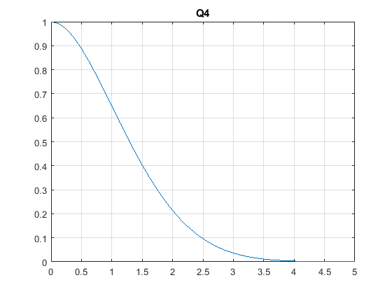
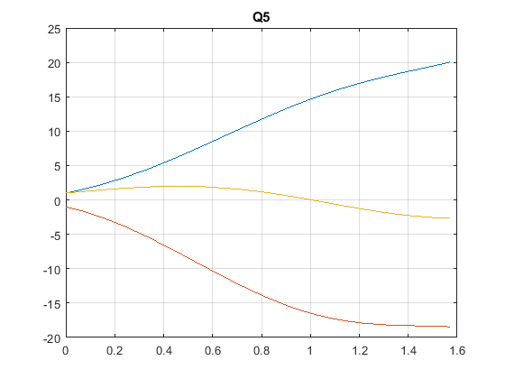

clear
clc
Q1 = dsolve('Dy = x^2/y','x')
Q2 = dsolve('Dy + y^2 * sin(x) = 0', 'x')
Q3 = dsolve('x * Dy = sqrt(1 - y^2)','x')
f = @(x,y) (-x*y)/sqrt(2 - y^2);
[x,y] = ode45(f, [0 5], 1);
figure(1);
plot(x,y)
grid on;
title('Q4');
[x1,y1] = ode23('ode',[0 pi/2], [1 -1 1])
figure(2);
plot(x1,y1)
grid on;
title('Q5');
Q1 =
2^(1/2)*(x^3/3 + C2)^(1/2)
-2^(1/2)*(x^3/3 + C2)^(1/2)
Q2 =
0
-1/(C5 + cos(x))
Q3 =
1
-1
sin(C8 + log(x))
x1 =
0
0.0100
0.0600
0.1455
0.2370
0.3369
0.4479
0.5706
0.7023
0.8075
0.9127
0.9789
1.0283
1.0777
1.1378
1.2106
1.2946
1.3893
1.4963
1.5708
y1 =
1.0000 -1.0000 1.0000
1.0710 -1.0816 1.0301
1.4550 -1.5393 1.1838
2.2286 -2.5075 1.4451
3.2227 -3.7854 1.6960
4.4903 -5.4157 1.8992
6.0906 -7.4337 1.9987
8.0208 -9.7722 1.9156
10.1700 -12.2140 1.5808
11.8542 -13.9738 1.1408
13.4408 -15.4686 0.5748
14.3658 -16.2454 0.1725
15.0127 -16.7367 -0.1423
15.6200 -17.1513 -0.4631
16.3043 -17.5543 -0.8527
17.0554 -17.9035 -1.3084
17.8256 -18.1442 -1.7855
18.6031 -18.2693 -2.2262
19.4316 -18.3435 -2.5520
20.0321 -18.4420 -2.6492
 